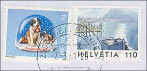
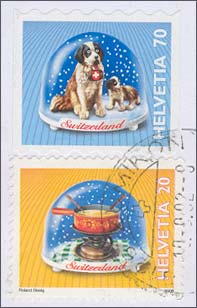
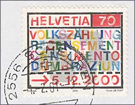
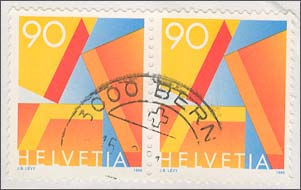
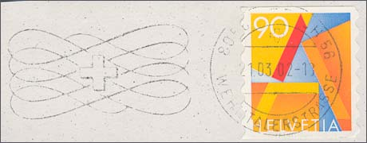
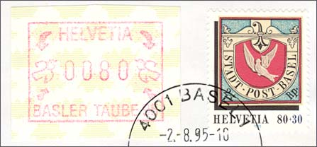
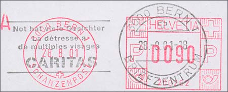
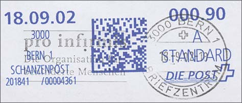
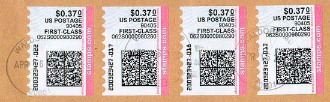

What can one do with the the stamps that he receives on covers? Are they good for something, can one find something interesting on them? Well, judge by yourselves, after having read what tell me the stamps shown below, that I have conserved because I cannot throw away a stamp, even if it's an ordinary one. By using a postal material that I have got without having made something for obtaining it (with one exception), I will show the different ways the Swiss postal authority has taken in order to reduce the design and the production costs of its stamps, but also, like in the case of self-adhesive stamps, to improve the comfort of its customers.
 |
 |
|
 |
Please take a look at the first pair, above, on the left, the right
stamps in the pair, which is a definitive one, issued by Switzerland in
1998. Nothing special with it, it is a normal, perforated stamp (13 x 13.5)
that reproduces a painting of a Swiss artist. On the left hand there is a stamp
showing a St. Bernard dog, stamp issued in 2000, and also perforated.
Consider now, please, the second pair, on the right. The
above stamp shows the same St. Bernard, just that it comes from a booklet of
self-adhesives stamps. Well, this is still a stamp, and even a nice one,
just that the DNA material of the sender isn't anymore present under it,
which is positive for the protection of personal data :-)
The stamp with the VOLKSZÄHLUNG word written in letters
of different colors was a propaganda
issue for the Dec. 2000 census. Any image seemed to be superfluous for
such a stamp, so that the case was quickly solved by putting the word
Census in four national languages. It's obviously only for those who can
read (about 5% of adult Swiss population apparently can't -- this being
maybe one of the surprises of this census), and who have the privilege to
understand at least one of our national languages.
 |
 |
And now we'll admire the further step made into the direction of "simplification". No, it's not the "A is A" of the genial Greek philosopher named Aristotle, it's just a so-called A-Post stamp, i.e. one to be affixed on the first-class (next day delivery) letters. The left pair shows the perforated version, the right stamp is from a booklet of self-adhesives. The advantage of this stamp was that it eliminated the necessity to write by hand an "A" on the cover, or to glue a label with an "A" on it, indicating this way to the post that it handles an first rate postal material. The disadvantage of such a design is that it is simply boring. Only about 7 years ago the "A" wasn't necessary at all, because we had an unique taxation, and all letter arrived the next day. It was just a mean to solve a problem that was created earlier by the same PA, but at least anybody, as well in Switzerland as abroad understands the profound message of this masterwork.
 |
 |
Above, on the left, I show a so-called machine stamp, which means a stamp
printed by a vending machine. One presses the knobs to indicate to the
machine the amount to be printed, puts the money into the machine, and they
get their stamp. The result still maintains some
characteristics of a stamp, like the name of the country. The fact that is
was still glued on covers makes from it a kind of stamp. The particular
machine stamp shown about is a bit special, because it was printed by a
machine at the Basler Taube exhibition, in 1995, where the machine was
specially programmed for this event. Of course I still prefer the stamp on
the right, showing the Dove of Basle, a feted stamp that is presented in a
manner that many of us, born in the 20th century, still love.
The stamp on the right isn't a stamp anymore, even if
it was canceled, this because it was directly printed on the cover by a
machine. Please notice that the name of the country is still present. The
print was
cancelled in Bern, by the central PO, having the code 3000, and named Schanzenpost. This
happened on Aug. 28, 2001.

And now, ladies and gentlemen, may I present you the new Digital Stamp, shown above! It comes as the result of a development of the Deutsche Post World Net, and of a software called "Stampit" (a very German name, indeed :) that allows for printing of stamps by using a PC and a laser or ink-jet printer. The printed stamps are composed using a so-called Datamatrix code, in which structure there is incorporated information about the number of the series, this for identification of the sender, and data about the letter (date of creation, porto). These data are encrypted, so that they cannot be falsified. Many other data are printed in normal text, which permits us, the analog mortals, to understand that this stamp was printed by the same PO as the earlier one, but an year later (more exactly on Sept. 18, 2002). The name of the issuing country has disappeared from it, just the symbol of it still stays (the cross, as being part of the Swiss Post logo). Just to notice that the above stamp, being "produced" at a PO, wasn't printed by a laser or an ink-jet printer, but by a machine. Anyway, the "future of philately" approaches, and nobody can stop it!
The future will show if the digital stamp will be "adopted" too, like the machines were, eventually by a new category of stamp fans, who will possibly proudly call themselves Digital stamp collectors. 101000100010000111000, and so on -- kiss goodbye the nice analog word of 19th and 20th century stamps, vive le nouveau roi, the Digital stamp of the 21st century!
A related posting appeared on RCSD,
signed by Bob Ingraham, Vancouver:
'Today I received a mailing from a collector franked with, well, U.S.
stamps, I guess. The e-mail he sent to me when he mailed the envelope
explains better than I can:'
"You might want to save the envelope I'm using.... I had a chance to get
some home-computer-generated adhesives one prints out in sheets for use like
any other stamp. They look like metered mail, but they aren't. They've not
yet been fully deployed here, sort of still in testing or marketing stage."
'Unlovely creations, in my opinion. I suppose the "matrix" on each of these
"compustamps" is some sort of genetic postal code.... If this is the future
of stamps, then stamp collecting as we know it ain't going to be stamp
collecting as we know it. (Thanks for the scan, Bob!).'

|
|